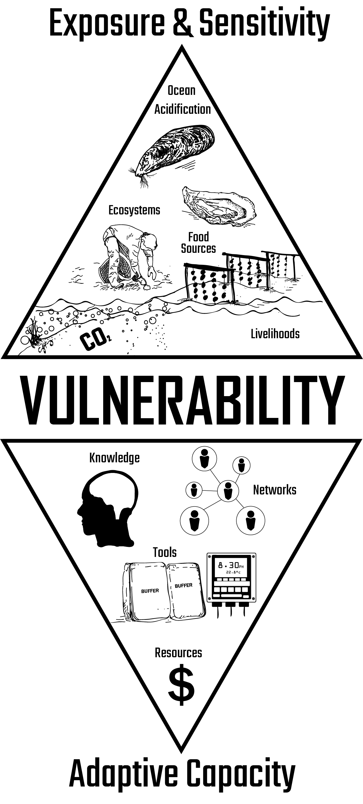
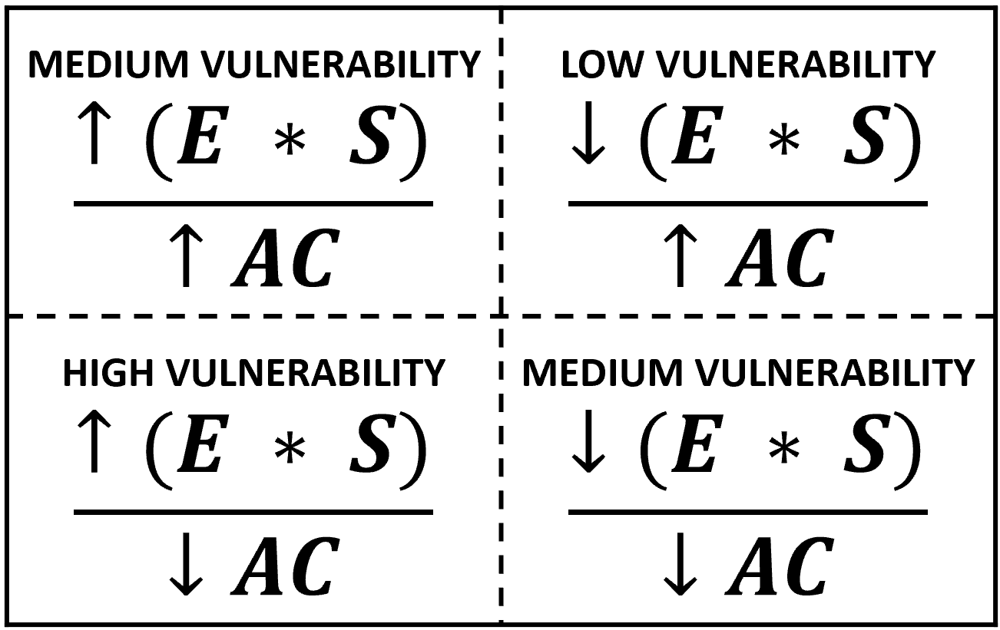

Pacific Northwest
Salish Sea to Humboldt Bay
Vulnerability to ocean acidification is affected by three major factors: 1) Exposure, 2) Sensitivity, and 3) Adaptive Capacity.
These factors are discussed in the next sections, but the important thing to note here is their relationship to vulnerability.
Vulnerability increases when exposure & sensitivity increase:
↑ Hazard = ↑ Vulnerability
Vulnerability decreases when adaptive capacity increases:
↑ Actions = ↓ Vulnerability
The spatiotemporal interaction of ocean acidification and bivalves.
Exposure refers to the magnitude, frequency, and intensity of impacts from both global OA and local amplifying factors that contribute to coastal acidification.

Micrograph of Pacific oyster larvae raised under normal conditions (left) and acidified water (right). Source: Barton, et al. 2012.
Interannual patterns of ocean acidification extremes harmful to shellfish are often observed in the spring and fall when seasonal upwelling brings high-CO2 water up to the coastal shelf from deep ocean currents.
As the ocean continues to absorb more CO2 from the atmosphere over time, the number of months per year when ocean acidification extremes harmful to shellfish
Sensitivity refers to the likelihood of feeling harmful consequences resulting from ocean acidification.

A vast network of people rely on oysters and mussels for their livelihoods, including: indigenous tribes, hatcheries, growers, harvesters, wholesalers, processors, distributors, and retailers.
Seed availability is key for hatcheries and harvesters to sustain future yields of shellfish. The "seed crisis" of the mid-to-late 2000's showed how seed shortages due to ocean acidification could create rippling consequences down the entire network of shellfish stakeholders.
Adaptive capacity is the ability to marshall knowledge, tools, resources, and networks to avoid or reduce harmful consequences resulting from a hazard.

Pumps are used to draw water from estuaries into shellfish hatcheries. To avoid pumping in acidified water, many hatcheries now buffer incoming water to ideal conditions for larvae growth in near real-time. This adaptation has allowed some hatcheries like Whiskey Creek to both rebound from adverse consequences from the seed crisis and improve their production compared to pre-crisis levels.
New monitoring systems for measuring water chemistry were developed through a partnership between Whiskey Creek and Oregon State University. The Burke-o-Lator (pictured above) measures seawater carbon dioxide (CO2) within bubbles, giving off an appearance similar to a coffee percolator.
Clusters of differential vulnerability to ocean acidification can be identified by combining watershed-level factors related to exposure, sensitivity, and adaptive capacity of shellfish stakeholders.

The factors shown above were entered into an attribute-based clustering algorithm in QGIS to produce this regional map of vulnerability to ocean acidification.
Low vulnerability watersheds are those with low exposure & sensitivity and high adaptive capacity (↓ Hazard, ↑ Actions).
Medium vulnerability watersheds are those with either: a) low exposure & sensitivity and low adaptive capacity (↓ Hazard, ↓ Actions), or b) high exposure & sensitivity and high adaptive capacity (↑ Hazard, ↑ Actions).
High vulnerability watersheds are those with high exposure & sensitivity and low adaptive capacity (↑ Hazard, ↓ Actions).